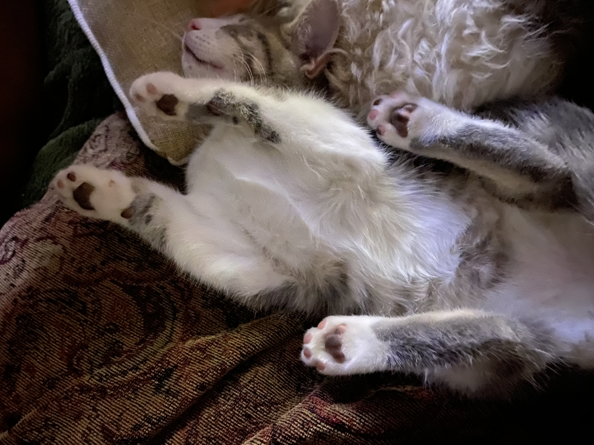
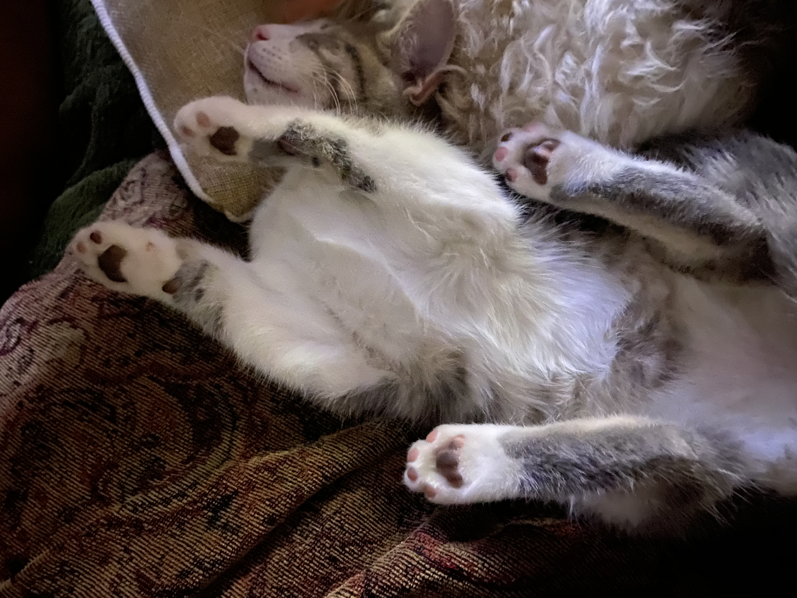

I once rode my bicycle from Portsmouth, New Hampshire to British Columbia, Vancouver.
This trip was meant to be 3,950 miles, but because of forest fires on the west coast
we were forced to reroute our traversing and clocked a whopping 4,111 miles that summer.
On the trip we rode our bikes through Glacier National Park, where we spent 17 miles
climbing Logan's Pass on the "Road Going to the Sun" a vertical climb, with 3,200 ft of elevation.
You would think a uphill climb like that would kill me, but after biking from the Alantic to Montana
my legs could handle it. Here is a photo from the top:
It was on this trip that I topped out my bike at 47 miles per hour.
If you would like to see the absurdity follow the Youtube prompt to
watch this video recapping the trip from Atlantic to Pacific.
After this cross country trip I moved back from San Jose to Grand Rapids.
It was a few years that ellapsed, but now I am settled back into Michigan life.
Since then I have started pottery, gotten married, and got a kitten.
 
